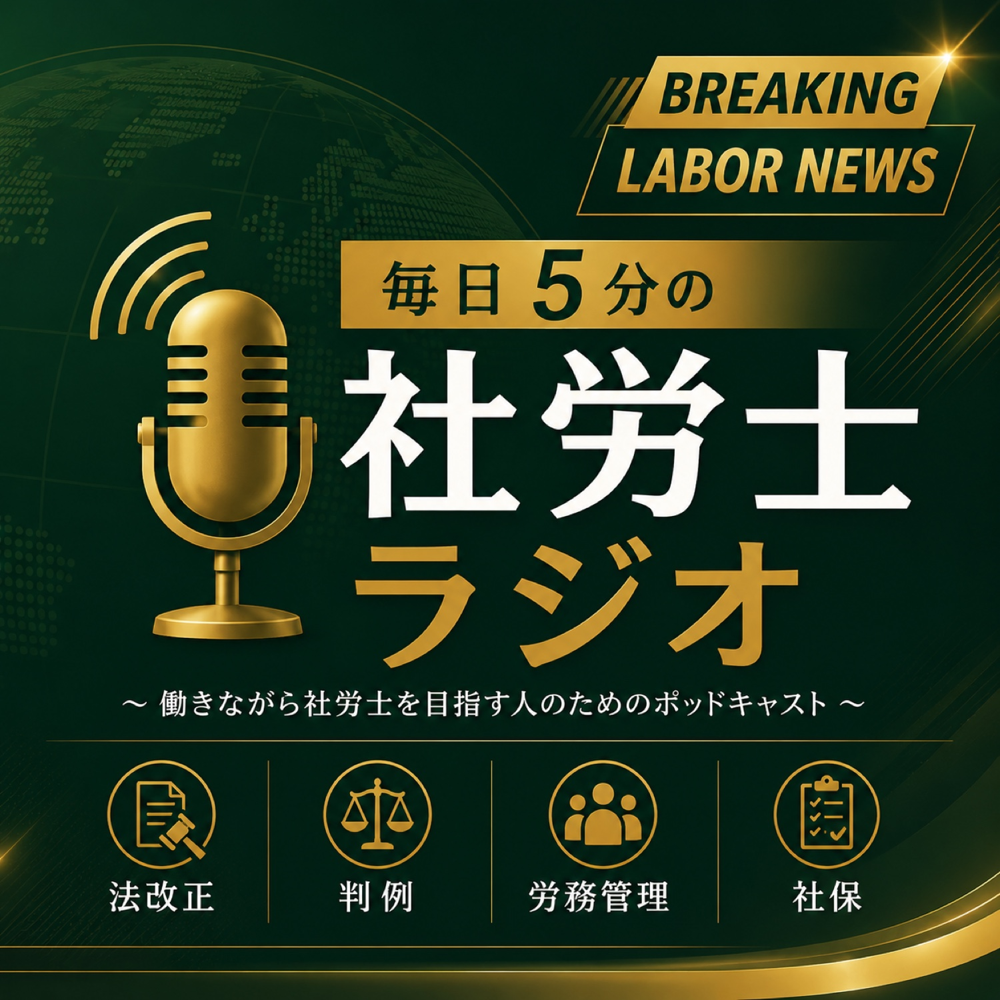

受験生のための社労士ラジオ
テキストでは追えない“今”を、毎朝5分で補う。
📡 RSS: feed.xml
在職老齢年金の基準額が65万円へ──年休に「使用者の承認」は要らない白石営林署事件（8/17）
2026-08-17 ・ 8:03
一人親方も安衛法の義務主体に（令和8年4月施行）──「うちの社員ではない」が通らない朝日放送事件（8/16）
2026-08-16 ・ 7:48
女性活躍推進法、男女賃金差異の公表が101人以上に──就業規則の不利益変更「第四銀行事件」（8/15）
2026-08-15 ・ 8:26
遺族厚生年金、2028年4月から男女共通で原則5年の有期給付へ──休業手当の6割はどこまで（8/14）
2026-08-14 ・ 8:10
社労士試験まであと9日──不安の9割は「自分で動かせないこと」に使われている（8/14夜）
2026-08-14 ・ 4:40
標準報酬月額の上限75万円へ──「みなし労働」を否定した阪急トラベルサポート事件（8/13）
2026-08-13 ・ 7:53
障害者の法定雇用率2.7%へ、対象は37.5人以上に──採用の自由を線引きした三菱樹脂事件（8/12）
2026-08-12 ・ 7:11
失業給付の日額が8月1日から引き上げ──寝坊2回の解雇はなぜ無効か・高知放送事件（8/11）
2026-08-11 ・ 8:02
2026/8/10 ストレスチェックが50人未満の事業場にも義務化（令和10年4月施行予定）／メンタル不調の不申告と過失相殺・東芝（うつ病・解雇）事件／試験対策：令和7年「労働安全衛生調査」（令和8年8月7日公表）
2026-08-10 ・ 7:19
職場の熱中症、過去最多の1,803人──死亡は4割減、義務化初年の答え合わせ（8/10夜）
2026-08-10 ・ 8:04
2026/8/9 令和8年度の最低賃金は全国加重平均1,176円の目安（+55円・4.9%）／年俸1,700万円でも割増賃金は判別要件・医療法人社団康心会事件／試験対策：労働争議の6割は賃金をめぐる争い（令和7年 労働争議統計調査）
2026-08-09 ・ 6:34
2026/8/9（夜） 社会保険の加入対象拡大・「106万円の壁」＝賃金要件は令和8年10月に撤廃予定／無効な解雇の期間は年休の出勤扱い・八千代交通事件／試験対策：教育訓練給付の指定講座と給付率（令和8年8月6日公表）
2026-08-09 ・ 7:42
2026/7/17 カスハラ対策義務化まで残り3か月（2026年10月1日・中小猶予なし）／相談窓口の運用と信義則上の義務・イビデン事件／試験対策：精神障害の労災でカスハラ127件に増加（令和7年度 過労死等の労災補償状況）
2026-07-17 ・ 9:39
2026/7/1 全国安全週間スタート・職場の安全はどこまで守るのか／使用者の安全配慮義務・川義事件／試験対策：メンタル不調で1か月以上休業・退職した事業所12.8%（令和6年労働安全衛生調査）
2026-07-01 ・ 7:34
2026/6/29 最低賃金目安審議が7月に山場・歩合給から残業代を引けるか（国際自動車事件）・算定基礎届は明日7/1から
2026-06-29 ・ 7:06
2026/6/25 朝 自営業・フリーランスの育児期間、国民年金保険料が免除に（令和8年10月・育児免除）／妊娠を理由とした降格はどこまで許されるか・広島中央保健生協事件／試験対策：国民年金の納付率 現年度78.6%・最終84.5%
2026-06-25 ・ 7:29
2026/6/21 朝 残業には上限がある「時間外労働の上限規制」と2024年問題／着替え・準備の時間は労働時間？三菱重工長崎造船所事件／試験対策：勤務間インターバル導入5.7%（令和7年就労条件総合調査）
2026-06-21 ・ 7:51
2026/6/20 朝 給料は現金だけじゃない「賃金のデジタル払い」（2023年4月〜）／給料は後から差し引ける？賃金全額払いの原則・シンガー事件／試験対策：平均給与478万円（民間給与実態統計調査）
2026-06-20 ・ 7:35
2026/6/18 朝 有期契約の「明示ルール」強化（2024年4月〜）／雇止めはどこまで許される？日立メディコ事件／試験対策：非正規雇用2,128万人と「自分の都合のよい時間に働きたいから」
2026-06-18 ・ 7:25
2026/6/17 朝 年金制度改正法・厚生年金の保険料上限が65万→75万円へ／遺族厚生年金の男女差を見直し（令和10年4月）／長澤運輸事件・定年後再雇用の賃金（試験対策：標準報酬月額の等級）
2026-06-17 ・ 8:25
2026/6/16 朝 技能実習から「育成就労」へ（令和9年4月施行）／旭紙業事件・自分のトラックで運ぶ人は労働者か／外国人労働者230万人の内訳（試験対策）
2026-06-16 ・ 7:58
2026/6/15 夜 傷病手当金は「通算」1年6か月へ（令和4年改正）／片山組事件・休んでも賃金請求できる場合／健康保険の現金給付の数字（出産育児一時金50万円ほか）
2026-06-15 ・ 6:59
2026/6/15 雇用保険が週10時間以上に拡大（2028年10月）／秋北バス事件・就業規則で定年制を新設できるか／賃金センサス所定内給与33万400円・ピークは55〜59歳
2026-06-15 ・ 7:23
2026/6/13 男女の賃金差公表が101人以上の企業に拡大／日産自動車事件・男女別定年制は無効／総合労働相談120万件・いじめ嫌がらせ13年連続最多
2026-06-13 ・ 7:47
2026/6/13 夜 カスハラも労災に・精神障害の認定基準（令和5年改正）／東亜ペイント事件・転勤命令の3要件／過労死ラインと令和6年度労災補償状況
2026-06-13 ・ 7:16
2026/6/12 熱中症対策義務化・2年目の夏を総点検／山梨県民信用組合事件・同意書だけでは守れない／男性育休取得率40.5%・初の4割超え
2026-06-12 ・ 6:59
2026/6/11 令和8年度の年金額・6月15日支給分からスタート／大和銀行事件・賞与の支給日在籍要件／算定基礎届＆推定組織率16.0%過去最低
2026-06-11 ・ 7:29
2026/6/10 令和8年度の雇用保険料率引下げ＆年度更新／大星ビル管理事件・仮眠時間の労働時間性／裁量労働制の実態調査＆就労条件総合調査
2026-06-10 ・ 8:01
2026/6/9 ストレスチェック全事業場義務化・施行は2028年4月／電通事件・安全配慮義務／令和7年労災 死亡700人で過去最少
2026-06-09 ・ 6:30
2026/6/8 教育訓練給付80%へ拡充／ハマキョウレックス事件・手当の個別判断／出生率1.14・過去最低
2026-06-08 ・ 6:13
2026/6/7 障害者の法定雇用率2.7%へ／定年後再雇用の賃金（名古屋自動車学校事件）／最低賃金1,121円
2026-06-07 ・ 4:27
2026/6/7夜 106万円の壁撤廃（10月）／日本郵便事件・非正規格差／実質賃金+1.9%
2026-06-07 ・ 6:45
2026/6/6 育児・介護休業法の改正／職種限定合意と配置転換（最判令6.4.26）／年次有給休暇取得率66.9%
2026-06-06 ・ 4:42
2026/6/6 カスハラ対策の義務化／定額残業代の有効性／労働経済白書・2024年の雇用情勢
2026-06-06 ・ 4:54
※内容は収録時点の法令にもとづきます。手続き・判断は最新の条文と専門家の確認を。